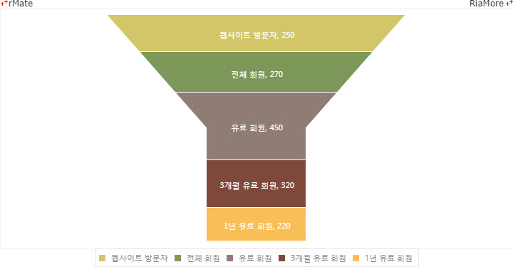

피라미드 차트
피라미드 차트는 삼각형을 선으로 나눈 각 영역에 관련된 주제의 데이터를 표현하는 차트입니다.
전체적으로 삼각형이기 때문에 각 영역의 넓이는 서로 다릅니다.
각 영역의 넓이가 다르기 때문에 어떤 주제와 관련된 각 영역의 데이터의 계층관계를 표현하는데 유용합니다.
예를 들면, 넓은 영역일 수록 일반적인 내용을 좁은 영역일 수록 구체적인 내용을 표현할 수 있습니다.
하지만 넓이의 크기가 데이터 값의 크기를 의미하지는 않습니다.
데이터 값의 크기는 영역의 길이의 크기와 비례합니다. 각 영역이 삼각형에 표시되는 순서는 데이터에 정의되는 순서와 같습니다.
제일 먼저 정의되는 데이터가 삼각형의 제일 상단 영역에 표시됩니다.
파라미드 차트는 <Pyramid2DChart> 노드의 series 속성값에 <Pyramid2DSeries> 노드를 설정하여 생성할 수 있습니다.
각 영역에 표시되는 레이블과 영역의 길이는 <Pyramid2DSeries> 노드의 다음 속성에 설정합니다.
| 속성명 |
유효값 (*: 기본값) |
설명 |
| nameField |
텍스트
|
영역의 레이블이 저장된 필드명을 지정합니다. |
| weightField |
텍스트
|
영역의 값이 저장된 필드명을 지정합니다. |
다음은 일반적인 피라미드 차트를 생성하는 코드와 데이터, 그리고 이를 적용해서 출력한 차트의 예제입니다.
var chartData = [{
"label" : "1 year paid membership",
"data" : 420
},{
"label" : "3 months paid membership",
"data" : 230
},{
"label" : "Paid membership",
"data" : 200
},{
"label" : "Total membership",
"data" : 200
},{
"label" : "WebSite visitors",
"data" : 200
}];
<Pyramid2DChart showDataTips="true">
<series>
<Pyramid2DSeries weightField="data" nameField="label" labelPosition="callout" leftBottomRatio="0.7" rightBottomRatio="0.7" color="#666" fontSize="11" labelYOffset="-2">
<showDataEffect>
<SeriesInterpolate duration="1000"/>
</showDataEffect>
<fills>
<SolidColor color="#FBB44F"/>
<SolidColor color="#89D1CF"/>
<SolidColor color="#00B2B3"/>
<SolidColor color="#0095D8"/>
<SolidColor color="#3C3C7F"/>
</fills>
</Pyramid2DSeries>
</series>
</Pyramid2DChart>
See the CodePen 알메이트 차트 - 피라미드 차트
피라미드 차트에서 표현되는 삼각형의 모양은 <Pyramid2DSeries> 노드의 다음 속성들을 이용하여 조정할 수 있습니다.
| 속성명 |
유효값 (*: 기본값) |
설명 |
| leftBottomRatio |
0 과 1(*) 사이의 숫자
|
삼각형의 좌측 하단 모서리의 각도 비율을 지정합니다. |
| rightBottomRatio |
0 과 1(*) 사이의 숫자
|
삼각형의 우측 하단 모서리의 각도 비율을 지정합니다. |
| leftTopRatio |
0(*) 과 1 사이의 숫자
|
삼각형의 좌측 상단 모서리의 각도 비율을 지정합니다. |
| rightTopRatio |
0(*) 과 1 사이의 숫자
|
삼각형의 우측 상단 모서리의 각도 비율을 지정합니다. |
| bottomRatio |
-1(*): 이 속성을 사용하지 않음
0 과 1 사이의 숫자
|
삼각형의 좌우측 하단 모서리의 각도 비율을 지정합니다. |
| topRatio |
-1(*): 이 속성을 사용하지 않음
0 과 1 사이의 숫자
|
삼각형의 좌우측 상단 모서리의 각도 비율을 지정합니다. |
| horizontalRatio |
-1(*): 이 속성을 사용하지 않음
0 과 1 사이의 숫자
|
좌우측 수평 비율을 지정합니다. |
| verticalRatio |
-1(*): 이 속성을 사용하지 않음
0 과 1 사이의 숫자
|
좌우측 수직 비율을 지정합니다. |
퓨널(Funnel) 피라미드 차트
위에서 설명한 피라미드 차트의 삼각형 모양을 조정하는 속성들 중 topRatio, bottomRatio, horizontalRatio 속성을 이용해서 깔대기(퓨널, Funnel) 모양의 피라미드 차트를 생성할 수 있습니다.
다음은 이에 대한 코드와 이를 적용해서 출력한 차트의 예제입니다.
<Pyramid2DChart showDataTips="true">
<series>
<Pyramid2DSeries weightField="data" nameField="label" topRatio="0.6" horizontalRatio="0.2" bottomRatio="0.2" color="#fff" fontSize="11">
<fills>
<SolidColor color="#D3C668"/>
<SolidColor color="#7D975A"/>
<SolidColor color="#907C75"/>
<SolidColor color="#7E493B"/>
<SolidColor color="#F9BE58"/>
</fills>
<showDataEffect>
<SeriesInterpolate duration="1000"/>
</showDataEffect>
</Pyramid2DSeries>
</series>
</Pyramid2DChart>

See the CodePen 알메이트 차트 - 퓨널(Funnel) 피라미드 차트
다이아몬드 피라미드 차트
위에서 설명한 피라미드 차트의 삼각형 모양을 조정하는 속성들 중 topRatio, bottomRatio, horizontalRatio 속성을 이용해서 다이아몬드 모양의 피라미드 차트를 생성할 수 있습니다.
다음은 이에 대한 코드와 이를 적용해서 출력한 차트의 예제입니다.
< Pyramid2DChart showDataTips="true" selectionMode="single">
< series>
< Pyramid2DSeries labelPosition="callout" weightField="data" nameField="label" topRatio="0" bottomRatio="0" horizontalRatio="0.5" fontSize="11" color="#666666" labelYOffset="-2">
< fills>
< SolidColor color="#276284"/>
< SolidColor color="#40b2e6"/>
< SolidColor color="#71d1ea"/>
< SolidColor color="#20cbc2"/>
< SolidColor color="#6aaa87"/>
< SolidColor color="#4f7560"/>
< SolidColor color="#88b14b"/>
< SolidColor color="#f6a54c"/>
< SolidColor color="#ffc943"/>
< SolidColor color="#ceb78b"/>
< SolidColor color="#b79c7e"/>
< SolidColor color="#886746"/>
< /fills>
< showDataEffect>
< SeriesInterpolate duration="1000"/>
< /showDataEffect>
< /Pyramid2DSeries>
< /series>
< /Pyramid2DChart>
See the CodePen 알메이트 차트 - 다이아몬드 피라미드 차트
오버레이 버블 차트
오버레이 버블 차트는 원으로 데이터의 계층 관계를 표현하는 차트입니다.
큰 원부터 시작해서 원의 크기에 따라 순차적으로 상위 원에 포함되는 모양으로 표현됩니다.
따라서 피라미드 차트와 마찬가지로 어떤 주제와 관련된 각 영역의 데이터의 계층관계를 표현하는데 유용한 차트 유형입니다.
오버레이 버블 차트는 <OverlayBubbleChart> 노드의 series 속성값에
<OverlayBubbleSeries> 노드를 설정하여 생성할 수 있습니다.
다음은 오버레이 버블 차트를 생성하는 코드와 이를 적용해서 출력한 차트의 예제입니다.
<OverlayBubbleChart showDataTips="true" paddingTop="10" paddingBottom="10">
<series>
<OverlayBubbleSeries field="data" nameField="label" labelPosition="inside">
<fills>
<SolidColor color="#3A3A84"/>
<SolidColor color="#54BAEA"/>
<SolidColor color="#93D6F0"/>
<SolidColor color="#88B14B"/>
<SolidColor color="#E2CE2F"/>
</fills>
<showDataEffect>
<SeriesInterpolate/>
</showDataEffect>
</OverlayBubbleSeries>
</series>
</OverlayBubbleChart>
See the CodePen 알메이트 차트 - 오버레이 버블 차트